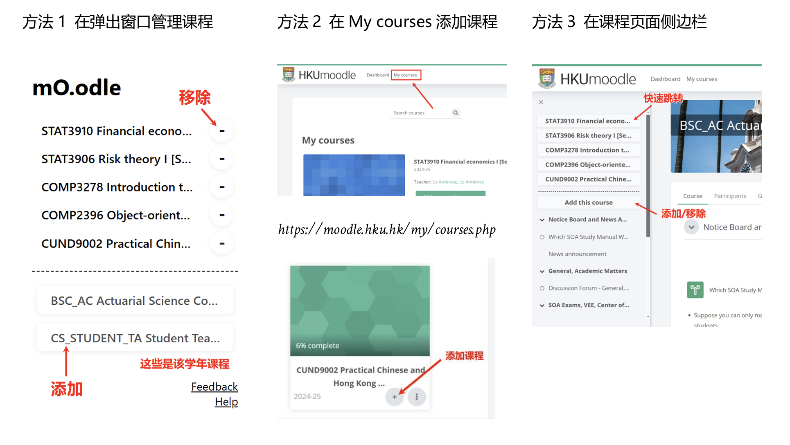

感谢安装mO.odle!
以下是一些使用提示：

#添加课程：
Method 1 扩展弹出窗口中会显示该学年课程列表，点击添加
Method 2 "My Courses"页面点击"+"添加
Method 3 课程页面侧边栏添加/移除
#快捷入口：
地址栏输入mo，点击Tab或空格激活入口，输入课程代码直接进入课程（模糊匹配）
#Q&A
Q: 添加课程后首页/侧边栏未显示？
请检查课程代码是否正确，或在尝试在首页 刷新
大部分问题都可以被刷新解决 :P
Q: 六门课无法显示在同一行
哈哈我只上了五门课，建议drop一门。这个一行挤六个特别丑^^
Q: 点击/无反应，无法添加课程
请手动添加一门课程，然后刷新页面即可
Q: 一门课有多个Moodle
请一次性添加所有该课程Moodle，本扩展会进行自动编号
欢迎在Github提出issue！
（如果你能看懂我的代码，请pr，谢谢你🫡）
强烈推荐配合扩展fastHKU使用！无需手动登录，一键进入课程